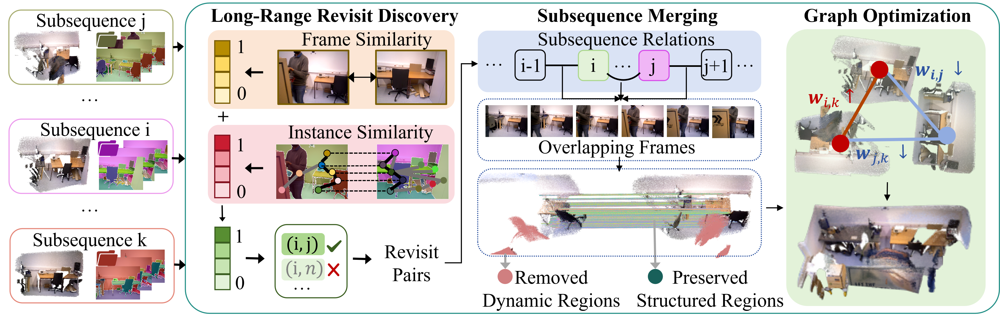
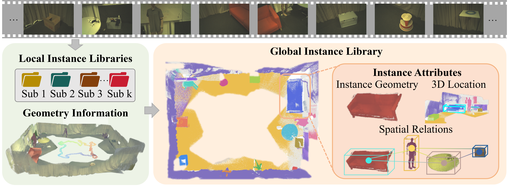

LIST3R: Long-sequence Instance-aware 3D Reconstruction
Using persistent object instances as anchors to organize long-horizon 3D reconstruction.
Beijing Jiaotong University · University of Illinois Chicago

Using persistent object instances as anchors to organize long-horizon 3D reconstruction.
Long-sequence 3D reconstruction must maintain persistent anchors across time and viewpoint change, re-identify revisited places over long horizons, and integrate partial reconstructions into a globally consistent representation. Streaming methods gradually forget early scene information, while subsequence-based methods retain strong local geometry but struggle to organize observations over long spans.
LIST3R is an instance-aware framework that uses recognizable object instances as persistent scene anchors. It builds a local instance library for each subsequence, uses instance evidence to discover long-range revisits and guide object-aware fragment alignment, and consolidates everything into a global 3D instance library — yielding more accurate trajectories and higher-quality point clouds across the full sequence.
Trackable object-centric cues organize fragmented observations into stable, recallable local libraries.
Instance semantic + spatial-layout consistency recovers revisits that frame-level similarity alone misses.
Instance-aware merging and confidence-weighted graph optimization assemble subsequences into a coherent scene.
LIST3R partitions a long video into overlapping subsequences reconstructed by a feed-forward 3D foundation model (π³), then anchors the whole process on object instances.

Sample anchor frames, discover query-based instances, and propagate masks with SAM3 to form temporally consistent instance records — object features, visible frames, and 2D locations per subsequence.
Instance-enhanced long-range revisit discovery, instance-aware subsequence merging that keeps structurally informative objects, and confidence-weighted Sim(3) graph optimization for global consistency.
Local instances of the same physical object are merged into persistent global records with geometry, global location, and spatial relations — a structured scene-level 3D memory.

Local instances of the same physical object across subsequences are consolidated into persistent global records — each maintaining object geometry, global 3D location, and spatial relations. This can serve as a 3D memory basis for downstream VLMs to perform object querying and scene-level reasoning.

Real fused point clouds from each method on NRGBD scenes. Drag a panel left/right to rotate it 180°, or hit Play to auto-spin all panels in sync. LIST3R (highlighted) preserves cleaner structure and fewer misalignment artifacts.
Point clouds are downsampled (~200k points) and canonically oriented for fair, side-by-side comparison. CUT3R & TTT3R are streaming; VGGT-Long, π-Long and Scal3R are subsequence-based baselines.
Directly running VGGT or π³ on full long sequences runs out of memory. Among scalable methods, LIST3R achieves the best ATE on all three benchmarks — the metric most directly reflecting whether local subsequences are correctly connected into a coherent global trajectory.
| Method | TUM | ETH3D | BONN | ||||||
|---|---|---|---|---|---|---|---|---|---|
| ATE↓ | RTE↓ | RRE↓ | ATE↓ | RTE↓ | RRE↓ | ATE↓ | RTE↓ | RRE↓ | |
| CUT3R | 0.866 | 0.963 | 40.19 | 2.895 | 2.537 | 43.04 | 0.319 | 0.561 | 58.13 |
| TTT3R | 0.317 | 0.385 | 9.92 | 1.317 | 0.939 | 10.33 | 0.149 | 0.759 | 47.51 |
| VGGT-Long | 0.325 | 0.489 | 25.21 | 1.292 | 1.701 | 32.92 | 0.123 | 0.787 | 47.43 |
| π-Long | 0.208 | 0.279 | 7.81 | 0.562 | 0.455 | 13.65 | 0.094 | 0.770 | 48.01 |
| Scal3R | 0.267 | 0.329 | 5.72 | 0.807 | 0.590 | 7.00 | 0.117 | 0.779 | 49.09 |
| LIST3R (Ours) | 0.150 | 0.211 | 6.97 | 0.516 | 0.444 | 9.32 | 0.085 | 0.779 | 45.89 |
Camera pose estimation on long sequences. ATE / RTE in meters, RRE in degrees — all lower is better. Green = best.

On ETH3D, LIST3R is best across all five metrics; on NRGBD it leads on Chamfer, accuracy, completeness and F-score. Gains are clearest in completeness and F-score — exactly the metrics that depend on whether subsequences are correctly merged into a coherent scene.
| Method | ETH3D | NRGBD | ||||||||
|---|---|---|---|---|---|---|---|---|---|---|
| Chamfer↓ | Acc↓ | Comp↓ | NC↑ | F@5↑ | Chamfer↓ | Acc↓ | Comp↓ | NC↑ | F@5↑ | |
| CUT3R | 140.0 | 62.8 | 217.3 | 0.536 | 4.0 | 73.2 | 50.1 | 96.4 | 0.575 | 9.0 |
| TTT3R | 102.6 | 36.6 | 168.6 | 0.610 | 7.3 | 41.3 | 26.2 | 56.4 | 0.647 | 22.2 |
| VGGT-Long | 50.6 | 56.7 | 44.4 | 0.618 | 19.8 | 6.1 | 5.3 | 6.9 | 0.857 | 68.9 |
| π-Long | 41.5 | 37.8 | 45.3 | 0.686 | 32.7 | 5.0 | 4.4 | 5.5 | 0.876 | 68.9 |
| Scal3R | 33.8 | 36.5 | 31.1 | 0.658 | 26.2 | 7.7 | 4.2 | 11.1 | 0.829 | 71.2 |
| LIST3R (Ours) | 27.4 | 31.1 | 23.6 | 0.709 | 36.5 | 4.7 | 4.1 | 5.3 | 0.875 | 73.4 |
Point cloud reconstruction quality. Chamfer / Acc / Comp in cm. Green = best.